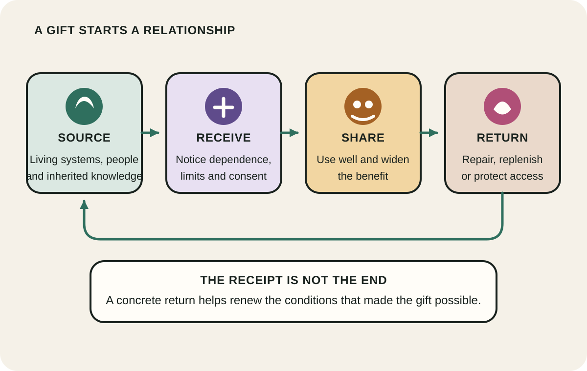
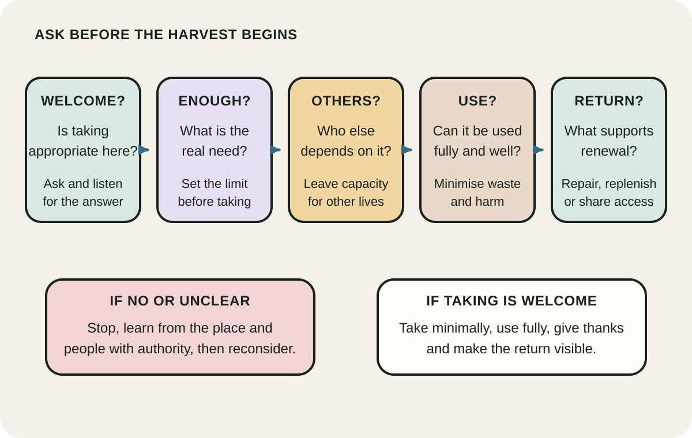
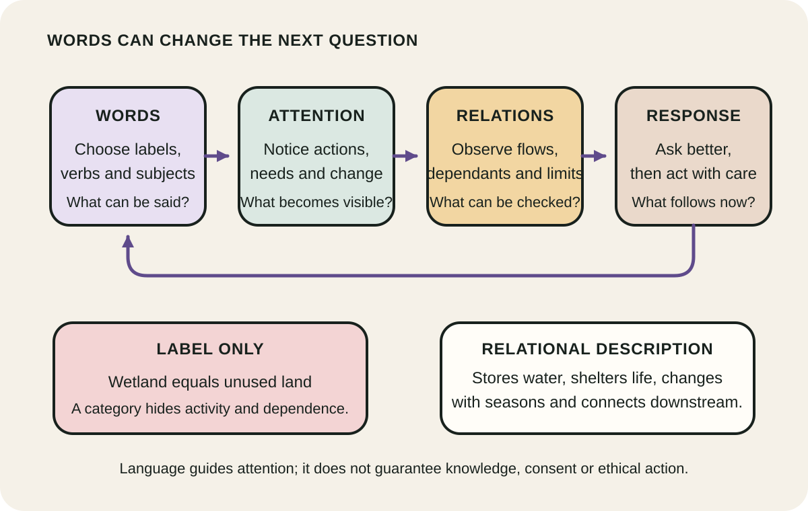

Daily lesson ·
Braiding Sweetgrass
Meet the living world as a relationship rather than a warehouse: receive gifts with attention, let restraint guide what you take, and make reciprocity visible through a concrete return.
Idea 1
Receive the gift, then notice the obligation #
The idea
Kimmerer contrasts a commodity, which can seem finished once purchased, with a gift, which carries a relationship between giver, receiver and the wider community. Air, food, water and the work of other beings arrive through systems we did not create alone. Naming them as gifts makes dependence and gratitude harder to ignore.
In the book, gratitude is not a private feeling that settles the account. Receiving well calls for responsibility: use the gift carefully, share its benefits and contribute to the conditions that let the giver and future receivers flourish. Reciprocity turns appreciation into a continuing relationship.

Why it matters
Consumption hides its upstream relationships easily. A gift lens restores visibility: it asks what sustains you, who bears the cost and what action could keep the exchange from ending at extraction.
Apply it today
Pick one thing you will use today, such as food, water, shade or a public place, and list three sources that made it available.
Choose one proportionate return you can complete or schedule, such as preventing waste, repairing damage, sharing access or supporting responsible care.
Caveat or failure mode
Gift language must not romanticise unpaid labour, excuse exploitation or imply that land and knowledge are freely available to take. A genuine gift depends on consent and context. Reciprocity also does not entitle an outsider to copy Indigenous ceremony or claim authority over teachings that belong to particular peoples and places.
Idea 2
Let restraint govern the harvest #
The idea
Kimmerer presents the Honorable Harvest as teachings that regulate taking within reciprocal relationships. Its practices include asking permission, taking only what is needed, minimising harm, using what is taken well, sharing and giving back. Restraint begins before extraction, not after damage has been counted.
The sequence depends on knowledge of the place and the beings involved. Listening for permission can include close observation of abundance, health, regeneration and the needs of other users. In Kimmerer's sweetgrass research, Indigenous harvest knowledge and ecological study meet in a specific plant relationship rather than in a licence for unlimited generalisation.

Why it matters
Efficiency often optimises the act of taking while leaving the right amount and the renewal duty unexamined. A restraint-first practice makes limits, other claimants and future capacity part of the decision.
Apply it today
Choose one planned use of a shared resource today, then name its current condition, other users and the smallest amount that meets your real need.
Set a stop rule before taking and name one return that supports repair, replenishment or fair access.
Caveat or failure mode
The Honorable Harvest is not a universal checklist detached from Indigenous peoples or local knowledge. An outsider cannot declare a harvest respectful by copying selected phrases. Ecological limits, law, ownership, consent and community authority still govern what is appropriate, and some places or beings should not be harvested at all.
Idea 3
Language can train attention toward relationship #
The idea
In Learning the Grammar of Animacy, Kimmerer describes studying Potawatomi and encountering grammatical forms that treat many beings as animate. She contrasts that relationship-rich grammar with English habits that often turn living beings into an impersonal it. Her argument is that words can make some relationships easier to notice and others easier to ignore.
She does not present grammar as a magic cause of ethical conduct. Language, attention, knowledge and practice reinforce one another. Naming a maple or river as a participant invites questions about what it does, needs and connects, while science can test the observations that follow.

Why it matters
People act on the world they notice. A vocabulary centred only on objects and uses can hide agency, dependence and change, while verbs and relationships create better questions for observation and care.
Apply it today
Spend two minutes with one plant, animal, waterway or patch of soil. Write three verbs describing what it is doing rather than three labels describing what it is.
Add two relationships you can observe or verify, then name one question that the first label did not prompt.
Caveat or failure mode
Do not imitate Potawatomi grammar without knowledge or treat Indigenous language as a tool available for extraction. English speakers can practise attention in English while respecting the specific language and community Kimmerer discusses. Word choice may open perception, but it does not prove ecological understanding or ethical behaviour.
Knowledge check · 6 questions
Learning check
Answer all 6, then check your answers. Your first result stays in this browser, and each explanation appears after you check. A 3-question review can appear on the homepage from tomorrow.
6 questions not yet answered.
Today's experiment · 10 minutes
Trace one gift and make one return
- Minutes 0 to 2: choose one ordinary gift you will use today, such as water, food, shade or a public place.
- Minutes 2 to 4: list three living, human or material sources that make it available.
- Minutes 4 to 6: write what enough means for this use and one way you could reduce waste or harm.
- Minutes 6 to 8: choose a return that serves renewal, repair or shared access, checking who has authority to welcome it.
- Minutes 8 to 10: complete the return or put a specific time for it on your calendar.
Observable result: A visible chain from source to use to one completed or scheduled return, with a clear limit on what you take.
Retrieval practice
Spaced recall
- From How to Measure Anything: what observable consequence would show whether your chosen return supports renewal rather than merely feeling generous?
- From Range: what structurally similar situation could help you recognise a reciprocal relationship outside the first example that comes to mind?
- From Your Money or Your Life: how might measuring the life energy behind a purchase change your idea of enough?
Verification
Source notes
These links support the attributed claims and edition details; applications and extensions are labelled in the lesson.
- Milkweed Editions: Braiding Sweetgrass publication details and central argument
- SUNY College of Environmental Science and Forestry: Robin Wall Kimmerer faculty profile
- Anthropology of Consciousness: Learning the Grammar of Animacy
- Emergence Magazine: Robin Wall Kimmerer on the Honorable Harvest and practical reverence
- YES! Magazine: Robin Wall Kimmerer on the Honorable Harvest
- SUNY ESF research: integrating traditional and scientific ecological knowledge of sweetgrass
One-sentence takeaway